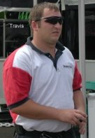
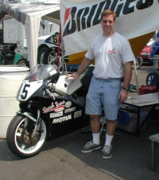

First, I would like to thank I-90 Motorsports, Cheetah Racing Bodies, SpeedTune, Galfer, Motul, Lockhart-Phillips, PBI Sprockets, and Bridgestone for their sponsorship.
Executive Summary:
DNF in main event due to clutch slippage caused by 2nd restart.
A pictoral storyboard of the weekend follows.
Arrive Friday morning to find the pits all setup by Ed Sorbo (what a guy!)
The first session, I go out and do fairly consistent 1:43's. I have a good idea of where the track goes afterwards, but need a lot of help setting entry speed and finding reference points. I talk with Ed Sorbo and Bruce Lind and gather a plan of attack for the afternoon session.
I go out in the second session and get down to 1:39's. I am happy with that. I know a few places where I can go faster, but I just have to figure out how to accomplish it. I consult with Ed and his tuner Bill and will try some things in Saturday's practice session.
Having thought a lot about the track and trying to piece together ways to lower my lap times, I was ready for Saturday. I knew the track and had figured out how to "connect" most of the corners and had some reference points down. I was hoping to drop another 2 seconds and get down to 1:37's. I went out in practice and only did 39's and 40's. I believe I was faster in a few places like T10 and T12, but for some reason I was giving up time in T2 and T5. I could still go faster in T7, but I was having a hard time setting my turn-in point to avoid the concrete patch on the outside of the "good inside line". The bike was jetted perfectly and was making great power.
I would do the best I could for Qualifying. I was gridded on Row 4D. The temperature was 99F with 35% humidity. I got a decent start, but let the immediate group in front of me get away and finished the 5 lap heat race 15th which put me on row 8A for the Main. I did however advance 2 rows on the start to pass and beat Andy Edwards (friend and arch enemy :).
Here's a picture of Bruce Lind delivering the final grid for the main event:
I decided to change my pistons since they were approaching the 300-mile limit. I noticed some detonation on the top cylinder so threw that piston away, but kept the other for a spare. I had the bike back together after an hour or so and put 2 heat-cycles on it to break-in the new pistons.
While I was working, the 750s were out and Jake Holden, a Seattle area rider, crashed and busted his foot up.
The Ricci team would not be fixing his bike this weekend, but they kept working on Jimmy Moore's bike to get the max horsepower they could.
The forecast was for 40% chance of scattered showers. There was a crash in practice on lap 2, so we had a delay and only got about 4 laps for the remainder of the session, but that was enough to scrub in the new tires.
Travis, Bridgestone Tires.
The bike was all ready for the main event at 2pm, so I just sat around the pits. Here's a pic of me with the bike all prepared for the Main.

The Main Event:
Well, it was time to get ready for the Main Event. The bike was ready, and so was I. The weather was not 100% predictable, but I figured I would run slicks and deal with any moisture we would get. Since the weather was "good", they moved our race to right after Pro Thunder qualifying. Right as soon as we lined up for the warm-up lap, it started to sprinkle. The AMA declared it a "wet race" and gave us 2 warm-up laps. Turns 1 to 5 were dry, and turns 6 to about 11 were wet with a light drizzle. No problem I though, it would be a short shower and the track would be "drying" throughout the race. I get a great start and pass a couple of rows by turn 1 and am right in the 20+ pack of riders as we head single file through turns 2-5. We get to turn 6 and I see a rider lowside. France had just passed me and we both decided to go outside and take a straight line in the grass to avoid the mess. As we slow and turn for T7, I see pit-mate Bruce Lind's bike in the middle of the track exiting T7 and there's Bruce "protected" behind his bike with his arm up waving to everyone (as in don't hit me). I pass the incident without noticing too much else and gas it. France raises his hand as if he was assuming a red flag would be shown. (personally I think this is a mistake) He was off the racing line, but I gas it and assume the mess will be cleaned up by the time we are back there in another 1:30+ seconds... By T10 a red flag is out.
I stop in the pits and tell Edie that Bruce fell and he appeared okay since I saw his eyes open and he was waving. It turns out that he gave it too much gas and the bike slid, caught, and spit him off. As he was tumbling to a stop Randy Renfrow ran over him; Randy *was* trying his hardest to brake and avoid Bruce! Later, we would learn that Bruce had a broken leg. It turns out that 5-7 bikes crashed in this ordeal.
The race was restarted after a short delay, in now totally dry conditions. We got one warm-up lap and I returned to my 8A grid position. The light turns green and I get another great start and am going into turn 1 with the pack. As I round T5 and head up the short hill, my clutch starts to slip. Crap! I take it easy on the bike and return to the pits. I stop by the Suzuki pits and yell out "get me 10mm wrench and a screwdriver". I take some adjustment out of the clutch and try to rejoin the race. At T3 the clutch is slipping again. I circulate around the track off the racing line and around T7, the leaders pass me. I signal my intentions to leave the track again and park the bike in the pits in case there is another red flag which would give me time to install a new clutch and get more laps. The race runs the remainder without any such red flags (which is a good thing). After the race I push the bike back to the pits. Oh well, "that's racing".
I still had a blast at Atlanta and like the track a lot. I got in some good laps and had fun. Since Bruce was injured, we left right away as Ed offered to load our stuff up. After some searching for crutches for Bruce, we hit the airport on-time and returned home around midnight. I said hello to my wife Janet and gave her a big kiss and told her how much I missed her and was off to bed.
Next weekend is Road America in Elkhart Lake, WI...I will *not* have a clutch failure there! (I hope :)
For other race reports, please see http://korygill.net/korygillracing-retro/racereports.html.
I hope you enjoyed my race report. If you have questions, comments, or want any specifics on my race setup or anything else, just ask.
Kory Gill
#15 AMA 250GP